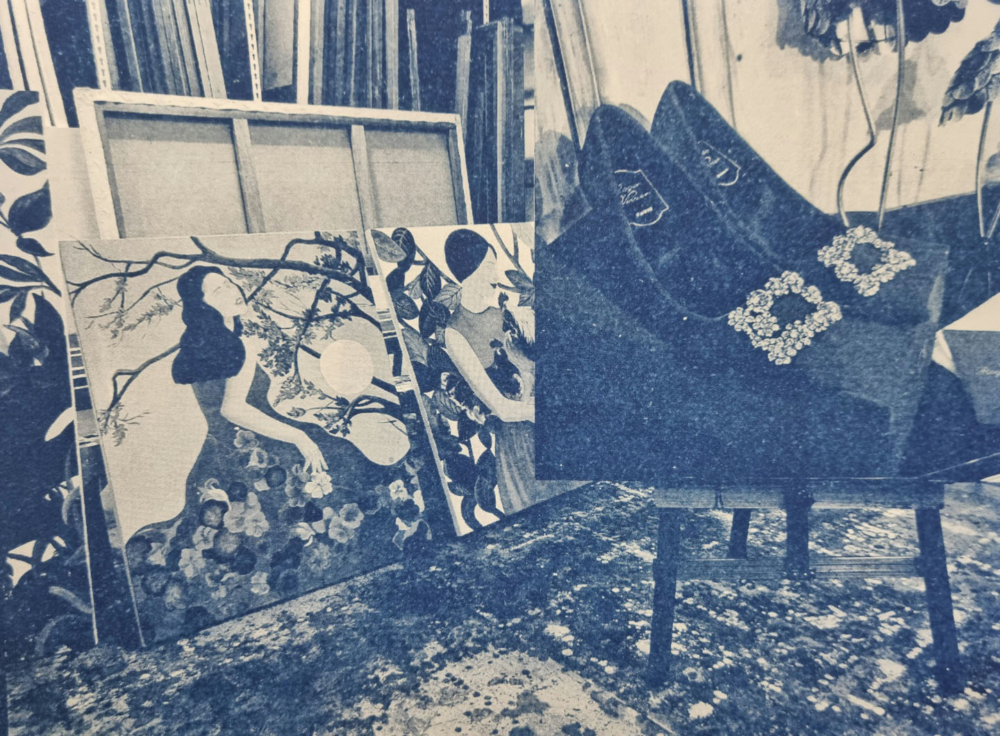
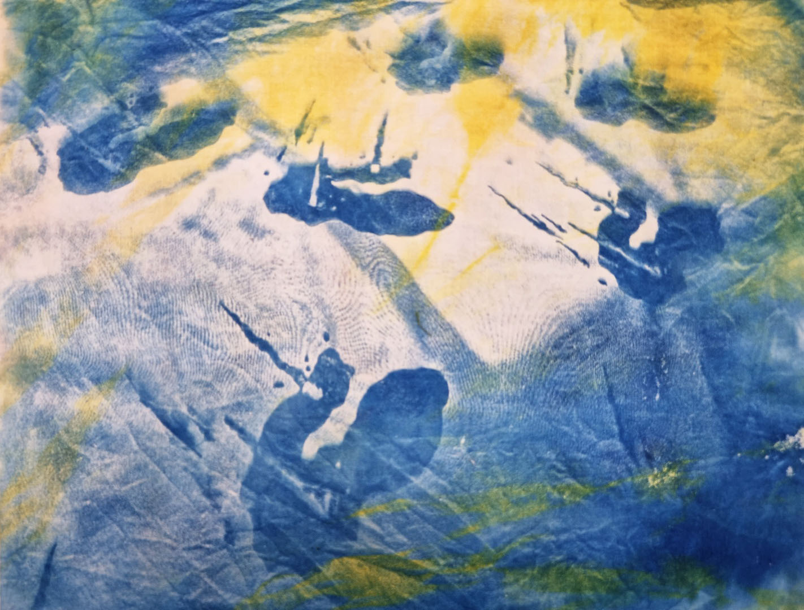
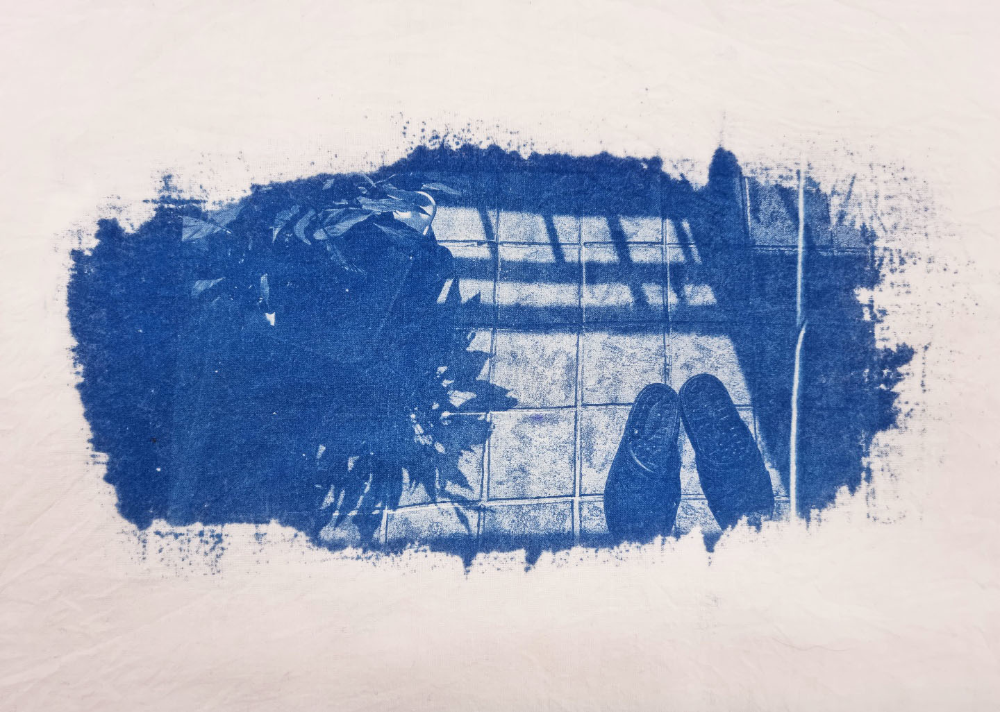
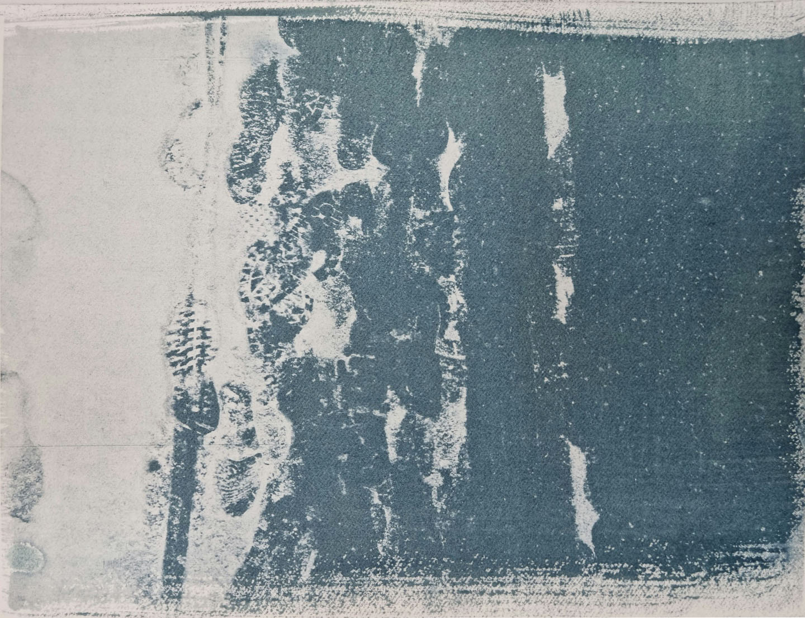
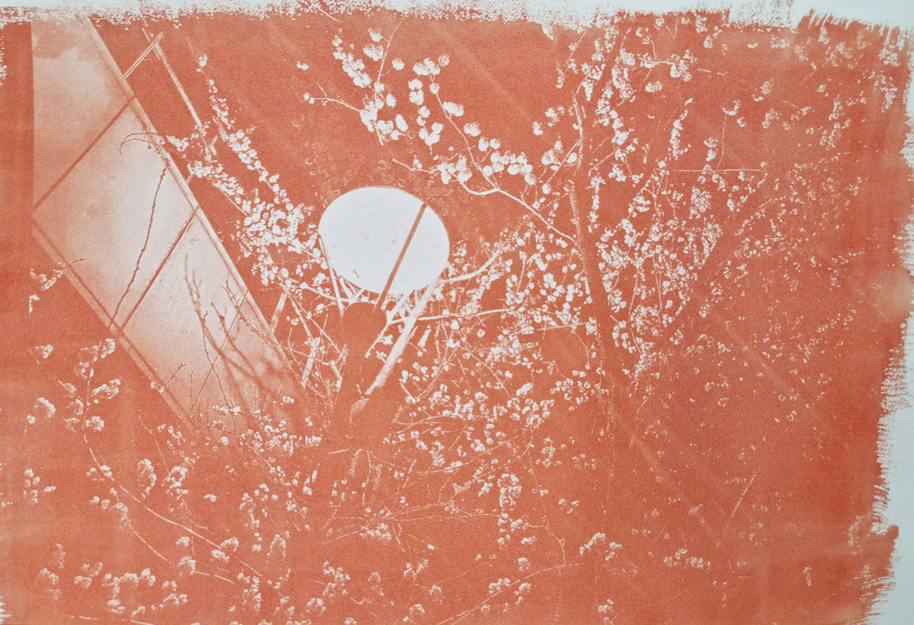
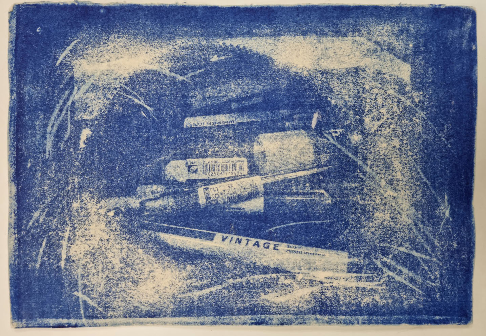
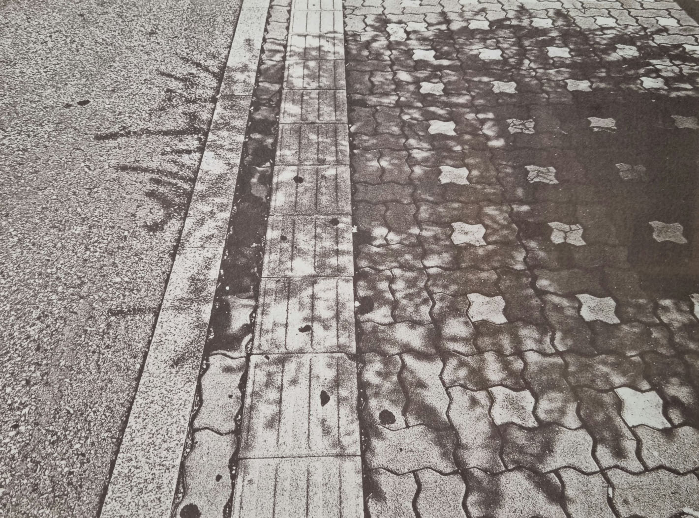
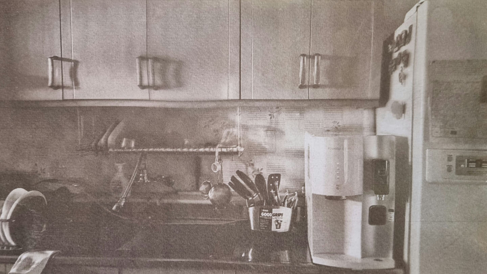

Cyanotype
Gum Printing
Van Dyke Printing
Cyanotype

파브리아노5중목300g,시아노2.5ml,태양광15분(맑음,14시경), 21X29.7(cm), 22.11.04

면30수에염색,시아노3.5ml, 태양광20분(맑고구름½,14시30분경), 30X35(cm), 22.10.08

면30수,시아노2.5ml, 소부기15분, 24X13(cm), 22.11.21
Gum Printing

띠에뽈로290g,검2.5ml, 물감0.5g, 소부기5분, 21X29.7(cm), 22.10.14

띠에뽈로290g,검2.5ml, 물감2g, 소부기5분, 21X29.7(cm), 22.10.28

로자스피나(미색)285g,검2.5ml, 물감1g, 태양13분(맑고구름½15시경), 21X29.7(cm), 22.11.04
Van Dyke Printing

파브리아노5285g,반다이크3ml,태양광3분(맑음,11시경), 21X29.7(cm), 22.11.11

파브리아노5중목300g,반다이크3ml,태양광3분(맑음,11시경), 21X29.7(cm), 22.11.04
파브리아노5중목300g,반다이크3ml,태양광3분(맑음,11시경), 21X29.7(cm), 22.11.04